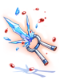

Illusion Dungeons Equipment
Introduction
This is a list of all available Illusion gear from Illusion Dungeons.
Note: do not get confused with Illusion Armors - the Illusion Update 17.1 Equipment is different to Illusion Dungeons Equipment.
Each piece of equipment in the list below can be dropped with a low chance by any monster from their respective Illusion dungeon.
When finishing all daily quests for the complete tier of Illusion Dungeons, you will obtain a refine box of your choice.
(E.g. after completing Illusion of Luanda and Illusion of Twins daily quests and talking to Osmundi, you'll get an option to pick either Luanda Refine Box or
Twins Refine Box.)
Each weapon in the list can be enchanted with up to 4 enchants - refer to Illusion Enchants wiki page.
Each armor in the list can be enchanted with up to 2 enchants - popular enchants like Powerful Nive Lv2 or  Agile Nive Lv2.
Agile Nive Lv2.
Each accessory in the list can be enchanted with up to 2 enchants - from 2-4 to a basic stat to flat HP or SP bonus.
Weapons
| Image | Name | Description | Dungeon |
|---|---|---|---|

|
Illusion Long Mace [2] | Reduces long ranged physical damage taken by 10%.
For every 2 refines, further reduces long ranged physical damage taken by 3%.
Attack: 185 Weight: 40 Weapon Level: 4 Required Level: 99 Jobs: Acolyte Class |
|

|
Illusion Spectral Spear [1] | Increase physical damage against shadow property, demon and undead race monsters by 20%.
Reduce damage taken from shadow property, demon and undead race monsters by 10%. Additional increase physical damage and reduce damage taken by 3% per 2 refine rate. Restore 50 HP when killing enemy with melee physical damage. Per 2 refine rate, additional restore 1 SP when killing enemy with melee physical damage. Has a chance to inflict confusion status on user. ASPD + 8%. If Illusion Spectral Spear [1] and Illusion Shoes [1] upgrade levels are +7 or higher, increases damage of If the combined upgrade levels of Illusion Spectral Spear [1] and Illusion Shoes [1] upgrade levels are +18 or higher, increase long ranged physical damage by 10%. If the combined upgrade levels of Illusion Spectral Spear [1] and Illusion Shoes [1] upgrade levels are +22 or higher, further increases the damage of
Attack: 240 Weight: 200 Weapon Level: 4 Required Level: 99 Jobs: Swordsman Class |
|
| Illusion Staff of Bordeaux [2] | MATK +180, INT +3, DEX +2.
When mastering Dragonology, decrease SP consumption of skills by 15% and MATK + 5%. For every 3 refines, further decrease the SP consumption of skills by 5% and increase MATK by 1%. Increases If If the combined upgrade levels of If the combined upgrade levels of
Attack: 60 Weight: 50 Weapon Level: 4 Required Level: 99 Jobs: High Mage Class |
||

|
Illusion Moonlight Dagger [1] | Max SP + 10%.
Recovers 3 SP per physical melee hit. If refined to 10 or higher, recovers an additional 4 SP per hit.
Attack: 150 Weight: 70 Weapon Level: 4 Required Level: 99 Jobs: Swordsman Class, Mage Class, Archer Class, Merchant Class, Thief Class, Soul Linker, Ninja |
|

|
Illusion Infiltrator [2] | Def + 3
Flee + 5 Perfect Dodge + 2 Increases physical damage on Demi-Human race targets by 60%. If upgrade level is +9 or higher, additional Flee + 5 and additional Perfect Dodge + 2 If upgrade level is +10 or higher, Atk + 5% Aspd + 10% If Illusion Infiltrator [2] upgrade level is +9 or higher, increases critical damage on targets by 10%. If Illusion Infiltrator [2] upgrade level is +11 or higher, increases physical damage on Brute race targets by 25%.
Attack: 200 Weight: 150 Weapon Level: 4 Required Level: 100 Jobs: Guillotine Cross |
|

|
Illusion Sharpened Legbone of Ghoul [2] | Adds a 4% chance of transforming the user into Ghoul for 6 seconds when performing a short-ranged attack.
While transformed, the user's property becomes Undead. Applies Endure effect for the duration of the transformation.
Attack: 220 Weight: 170 Weapon Level: 3 Required Level: 100 Jobs: Guillotine Cross |
|

|
Illusion Wizardry Staff [2] | MATK + 250
Int + 6 Dex + 2 Additional Int + 1 and Dex + 1 for every 2 upgrade levels of the item up to a maximum upgrade level of 10.
Attack: 150 Property: Neutral Weight: 240 Weapon Level: 4 Requires Level: 100 Usable By: Warlock, Sorcerer |
|

|
Illusion Ballista [2] | Increases long-ranged damage on targets by 1% per upgrade level of the item.
Atk + 50 Increases long-ranged damage on targets by 5%. If If the combined upgrade levels of If the combined upgrade levels of
Attack: 200 Weight: 350 Weapon Level: 4 Requires Level: 100 Usable By: Ranger, Maestro, Wanderer |
|
| Illusion Book of the Apocalypse [2] | Increases physical damage on Water, Earth, Fire, and Wind property targets by 10%.
Increases physical damage by an additional 10% per 3 upgrade levels of the item up to a maximum upgrade level of 10. Increases damage taken from Holy property enemies by 30%. Aspd + 8% Increases critical damage on targets by 5% for every 2 upgrade levels of If If
Attack: 170 Weight: 80 Property : Dark Weapon Level: 4 Required Level: 100 Jobs: Arch Bishop, Sorcerer, Star Emperor |
||
| Illusion Huuma Fluttering Snow [2] |
MATK + 50
Attack: 250 Weight: 150 Weapon Level: 4 Required Level: 120 Usable Jobs: Ninja classes |
||

|
Illusion Combo Battle Glove [2] |
Increase
Attack : 250 Weight : 50 Weapon Level : 4 Required Level : 120 Usable Jobs : Sura |
|

|
Illusion Immaterial Sword [2] |
Unbreakable (except in upgrade attempts). MATK + 100.
Attack: 180 Property: Ghost Weight: 90 Weapon Level: 4 Required Level: 120 Usable Jobs : Swordsman classes, Thief classes, Merchant classes. |
|

|
Illusion War Axe [2] |
STR + 2, DEX + 2, LUK + 2. ATK + 40.
Attack: 180 Weight: 420 Weapon Level: 4 Required Level: 120 Usable Jobs: Merchant Classes. |
|

|
Illusion Pole Axe [2] |
STR + 3, INT + 2, DEX + 2. ATK + 40.
Attack: 190 Weight: 150 Weapon Level: 4 Required Level: 120 Usable Jobs: Swordsman classes. |
|

|
Illusion Wing Shuriken [2] |
DEX + 2.
ATK + 50.
Attack: 300 Weight: 150 Weapon Level: 4 Required Level: 120 Usable Jobs: Ninja. |
|

|
Illusion Iron Driver [2] |
Increases the damage of Increases attack speed by 10% (reduces after attack delay by 10%).
Attack: 210 Weight: 200 Weapon Level: 4 Required Level: 120 Usable Jobs: Archbishop. |
|

|
Illusion Counter Dagger [2] |
CRIT + 90.
Increases attack speed by 10% (reduces after attack delay by 10%).
Attack: 170 Weight: 90 Weapon Level: 4 Required Level: 120 Usable Jobs: Mage classes, Soul Linker classes. |
|
| Illusion Gate Keeper-DD [2] |
Splash Attack, DEX + 1.
ATK + 10%.
Attack: 240 Weight: 130 Weapon Level: 4 Required Level: 120 Usable Jobs: Rebellion. |
||

|
Illusion Survivor's Staff [2] |
INT + 2, DEX + 2.
MATK + 50.
Attack: 100 Weight: 120 Weapon Level: 4 Required Level: 120 Usable Jobs: Mage classes, Soul Linker classes, Acolyte classes. |
|
| Illusion Tablet [2] |
Increases physical damage against Shadow, Undead, Poison and Ghost property monsters by 10%. Increases attack speed by 8% (reduces after attack delay by 8%).
Attack: 170 Weight: 80 Weapon Level: 4 Required Level: 100 Usable Jobs: Sage classes, Priest classes, Star Gladiator classes. |
||

|
Illusion Hunter Bow [2] |
When equipped with ATK + 10%. [Hunter's Sight] ATK + 100, increases critical damage by 15%, increases physical damage against Insect and Brute race monsters by 50%.
Attack: 165 Weight: 150 Weapon Level: 4 Required Level: 120 Usable Jobs: Ranger. |
|

|
Illusion Electric Eel [2] |
MATK + 180
ATK + 30
MATK + 40
Attack: 170 Weight: 180 Weapon Level: 4 Required Level: 120 Usable Jobs: Wanderer |
|
| Illusion Electric Guitar [2] |
MATK + 180
ATK + 30
MATK + 40
Attack: 170 Weight: 180 Weapon Level: 4 Required Level: 120 Usable Jobs: Minstrel |
||

|
Illusion Brionac [2] |
ATK + 10%
ATK + 5%.
Attack: 210 Weight: 300 Weapon Level: 4 Required Level: 120 Usable Jobs: Swordsman classes. |
|
|  | Illusion Katar of Frozen Icicle [2] |
ATK + 5 per refine rate.
ATK + 5%.
Attack: 220 Weight: 120 Weapon Level: 4 Required Level: 120 Usable Jobs: Assassin classes. |
|

|
Illusion Death Guidance [2] |
ATK + 4 per refine rate. ATK + 30.
Attack: 240 Weight: 200 Weapon Level: 4 Required Level: 120 Usable Jobs: Swordsman classes. |
|

|
Illusion Zephyrus [3] |
ATK + 4 per refine rate. ATK + 30.
Attack: 250 Weight: 330 Weapon Level: 4 Required Level: 120 Usable Jobs: Swordsman classes. |
|
| Illusion Butcher [2] |
Increases long ranged physical damage by 2% every 15 base STR. ATK + 10%.
Attack: 210 Weight: 250 Weapon Level: 4 Required Level: 120 Usable Jobs: Gunslinger classes. |
||
| Illusion Tae Goo Lyeon [2] |
Perfect Dodge + 10. Increases long ranged physical damage by 3%.
Attack: 250 Weight: 200 Weapon Level: 4 Required Level: 120 Usable Jobs: Swordsman third classes. |
||
| Illusion Gold Lux [2] |
HIT + 10.
ATK + 30.
Attack: 160 Weight: 180 Weapon Level: 4 Required Level: 120 Usable Jobs: Gunslinger classes. |
||

|
Illusion Bazerald [2] |
INT + 5, MATK + 170. MATK + 50.
Attack: 120 Weight: 50 Property: Fire Weapon Level: 4 Required Level: 120 Usable Jobs: Swordsman classes, Archer classes, Thief classes, Mage classes, Merchant classes, Ninja classes, Soul Linker classes. |
|
| Illusion Thorn Staff of Darkness [2] |
|
||
| Illusion Dea Staff [2] |
|
||

|
Illusion Gelerdia [2] |
|
|
| Illusion Excalibur [2] |
|
||
| Illusion Doom Slayer [2] |
|
||

|
Illusion Ancient Dagger [2] |
|


Armors
Shields
| Image | Name | Description | Dungeon |
|---|---|---|---|

|
Illusion Sacred Mission [1] |
INT + 2, VIT + 3
Defense: 190 Weight: 160 Required Level: 120 Jobs: Royal Guard |
|

|
Illusion Guard [1] |
|
|

|
Illusion Silver Guard [1] |
|

Headgears
| Image | Name | Description | Dungeon |
|---|---|---|---|
| Illusion Nurse Cap [1] | Int + 1
Additional Int + 1 and increase in heal effectiveness by 3% per 2 refine rate. [+
Defense: 4 Location: Upper Weight: 10 Required Level: 99 Jobs: Acolyte Class |
||

|
Illusion Apple of Archer [1] | DEX + 3
Additional DEX + 1 per 2 refine rate.
Defense: 1 Location: Upper Weight: 20 Required Level: 99 Jobs: Every Job except Novice |
|
| Illusion Cap [1] |
ATK + 1%
Defense: 15 Location: Upper Weight: 40 Required Level: 120 Jobs: Swordsman classes, Novice classes, Thief classes, Merchant classes |
||

|
Illusion Fancy Flower [1] |
MATK + 1%.
Defense: 0 Location: Top Weight: 10 Required Level: 120 Usable Jobs: All |
|
| Illusion Hot-blooded Headband [1] |
STR + 2.
Defense: 3 Location: Upper Weight: 10 Required Level: 120 Usable Jobs: All except Novice. |
||

|
Illusion Goibne's Helm [1] |
VIT + 3, MDEF + 3.
VIT + 5, MaxHP + 15%, MaxSP + 5%, DEF + 5, MDEF + 15.
Defense: 25 Location: Upper Weight: 100 Required Level: 130 Usable Jobs: All except Novice. |
|
| Illusion Morrigane's Helm [1] |
Str + 5, Cri + 5.
Str + 5, ATK + 10%, Cri + 5
Defense : 15 Location : Upper Weight : 50 Required Level : 130 Usable Job : All except Novice. |
||
| Illusion Morpheus's Hood [1] |
INT + 10, MDEF + 15, MaxSP + 20%.
INT + 5, MaxSP + 10%, DEF + 100.
Defense: 15 Location: Upper Weight: 20 Required Level: 130 Usable Jobs: All. |


Body Armors
| Image | Name | Description | Dungeon |
|---|---|---|---|

|
Illusion Puente Robe [1] | Reduce fixed casting time by 3%.
Increase heal effectiveness by 5%. Additional increase in heal effectiveness by 1% per refine rate. [+
Defense: 52 Weight: 40 Required Level: 99 Jobs: Every Job |
|

|
Illusion Goibne's Armor [1] |
MaxHP + 10%.
Defense: 158 Weight: 350 Weapon Level: 4 Required Level: 130 Usable Jobs: All except Novice. |
|

|
Illusion Saint Robe [1] |
MaxHP + 10%, MaxSP + 10%.
ATK + 30.
Defense : 60 Weight : 60 Required Level : 120 Usable Job : Acolyte classes, Merchant classes. |
|

|
Illusion Saphien's Armor of Ocean [1] |
MaxHP + 10%.
Class : Armor Defense : 50 Weight : 220 Required Level : 120 Usable Job : Swordsman classes, Merchant classes. |
|

|
Illusion Chain Mail [1] |
MaxHP + 10%, MaxSP + 10%.
ATK + 5%.
Defense : 70 Weight : 330 Required Level : 120 Usable Job : Swordsman classes, Merchant classes, Thief classes. |
|
| Illusion Sprint Mail [1] |
|


Garments
| Image | Name | Description | Dungeon |
|---|---|---|---|

|
Illusion Muffler [1] | Max HP + 100, Max SP + 10.
Additional Max HP + 100 and Max SP + 5 per refine rate.
Defense: 8 Weight: 40 Required Level: 99 Jobs: Every Job except Novice |
|

|
Illusion Ancient Cape [1] | Agi + 2
Additional Agi + 1 per 2 upgrade levels of the item up to a maximum upgrade level of 10.
Shadow Chaser Bonus Matk + 80 If If the combined upgrade levels of If the combined upgrade levels of
Defense: 18 Weight: 60 Required Level: 100 Jobs: Every Job except Novice |
|
| Illusion Survivor's Manteau [1] |
VIT + 15
Defense: 30 Weight: 55 Required Level: 130 Usable Jobs: Mage classes, Soul Linker |
||

|
Illusion Goibne's Spaulders [1] |
VIT + 1, MDEF + 2.
Defense: 47 Weight: 100 Required Level: 130 Usable Jobs: All except Novice. |
|

|
Illusion Morrigane's Manteau [1] |
Luk + 5, Flee + 20.
Defense : 12 Weight : 60 Required Level : 130 Usable Job : All except Novice. |
|
| Illusion Morpheus's Shawl [1] |
MaxSP + 10%, MDEF + 5.
Defense: 8 Weight: 60 Required Level: 130 Usable Jobs: All. |


Boots
| Image | Name | Description | Dungeon |
|---|---|---|---|
| Illusion Shoes [1] | Max HP + 100, Max SP + 10.
Additional Max HP + 100 and Max SP + 5 per refine rate.
Defense: 10 Weight: 40 Required Level: 99 Jobs: Every Job except Novice |
||
| Illusion Boots [1] |
Increases attack speed by 1% (reduces after attack delay by 1%) per refine rate.
Defense: 16 Weight: 60 Required Level: 100 Usable Jobs: Swordsman classes, Merchant classes, Thief classes, Archer classes, Gunslinger classes, Star Gladiator classes. |
||

|
Illusion Goibne's Greaves [1] |
MaxHP + 5%, MaxSP + 5%. If the refine rate is 7 or higher, reduces variable casting time by 5%. If the refine rate is 9 or higher, increases long ranged physical damage by 10%.
Defense: 42 Weight: 120 Required Level: 130 Usable Jobs: All except Novice. |
|

|
Illusion Sprint Shoes [1] |
|
Accessories
| Image | Name | Description | Dungeon |
|---|---|---|---|

|
Illusion Skull Ring [1] | This accessory can only be equipped in the right accessory slot.
Adds a chance of inflicting Curse on the target and the user when performing a short-ranged attack.
Weight: 10 Required Level: 100 Jobs: Every Job |
|
| Illusion Ring [1] | Str + 3
If the user's base Str is 100 or higher, Atk + 30. Aspd + 10% If Illusion Infiltrator [2] upgrade level is +9 or higher, increases critical damage on targets by 10%. If Illusion Infiltrator [2] upgrade level is +11 or higher, increases physical damage on Brute race targets by 25%.
Weight: 20 Required Level: 100 Jobs: Every Job except Novice |
||

|
Illusion Morrigane's Belt [1] |
Str + 3, MaxHP + 5%.
increases attack speed by 10% (reduces delay after attack by 10%).
Defense : 0 Weight : 20 Required Level : 130 Usable Job : All except Novice. |
|
| Illusion Morrigane's Pendant [1] |
ATK + 20, Cri + 5. ATK + 10%.
Defense : 0 Weight : 20 Required Level : 130 Usable Job : All except Novice. |
||

|
Illusion Morpheus's Ring [1] |
INT + 3, MaxSP + 5%.
Reduces variable casting time by 10%.
Defense: 0 Weight: 10 Required Level: 130 Usable Jobs: All. |
|

|
Illusion Morpheus's Bracelet [1] |
INT + 3, MaxSP + 5%.
MATK + 10%.
Defense: 0 Weight: 10 Required Level: 130 Usable Jobs: All. |
|

|
Illusion Sprint Ring [1] |
|
|

|
Illusion Sprint Glove[1] |
|